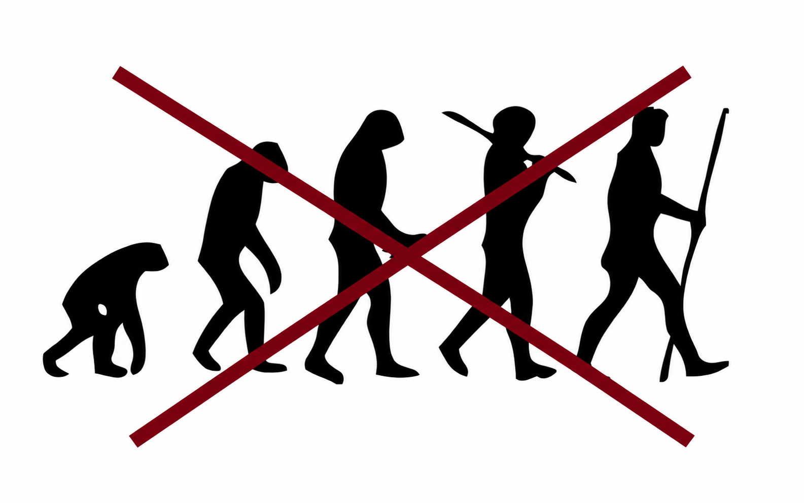

L'humain
et les singes
L'humain ne descend pas du chimpanzé actuel : ils partagent un ancêtre commun.
Ce qu'on ne dit pas
Fausse idée
“L'humain descend du singe actuel.”
Meilleure formulation
L'humain est un singe.
Image correcte
L'évolution ressemble davantage à un buisson ramifié qu'à une marche droite vers l'humain.
Petit quiz : es-tu un singe ?
Réponds aux questions en choisissant l'option qui correspond à l'humain. Le but est de comprendre la classification biologique, pas le langage courant.
La classification complète de l'Homme
À chaque niveau, un caractère anatomique précis nous range dans le groupe. C'est de la taxonomie, pas de l'opinion.
| RANG | GROUPE | CARACTÈRE QUI NOUS Y RANGE |
|---|---|---|
| Domaine | Eucaryotes | Cellules avec noyau |
| Règne | Animaux (Metazoa) | Multicellulaire, hétérotrophe, mobile |
| Embranchement | Chordés | Notochorde au stade embryonnaire |
| Sous-embr. | Vertébrés | Colonne vertébrale, crâne |
| Classe | Mammifères | Poils, glandes mammaires, sang chaud |
| Ordre | Primates | Pouce opposable, vision binoculaire, ongles |
| Sous-ordre | Haplorhiniens | Pas de rhinarium (nez sec) |
| Infra-ordre | Simiiformes (= SINGES) | Ongles, orbite fermée, mandibule fusionnée |
| Parvordre | Catarrhiniens | Narines rapprochées vers le bas |
| Super-famille | Hominoïdes | Pas de queue, grande taille, épaule mobile |
| Famille | Hominidés (grands singes) | Gorille, chimpanzé, orang-outan, humain |
| Genre / Espèce | Homo sapiens | Bipédie permanente, gros cortex, langage |
La “marche du progrès” est trompeuse

L'image classique qui montre un singe devenant progressivement un humain donne une mauvaise impression.
Elle donne l'impression d'une ligne droite
Comme si toute l'évolution allait forcément vers l'humain.
Elle cache les branches disparues
Beaucoup de lignées humaines ou proches de l'humain ont existé puis ont disparu.
Elle mélange progrès et évolution
L'évolution n'a pas un objectif final. Elle produit des adaptations dans des contextes donnés.
L'évolution est buissonnante
Une diversification progressive, diffuse et sans trajectoire unique
Classification
L'humain appartient au groupe des primates, et plus précisément aux grands singes.
Primates
Groupe qui inclut notamment les singes, les grands singes et les humains.
Simiiformes
Groupe des singes au sens large, incluant aussi la lignée humaine.
Hominidés
Famille qui comprend les humains, chimpanzés, gorilles et orangs-outans.